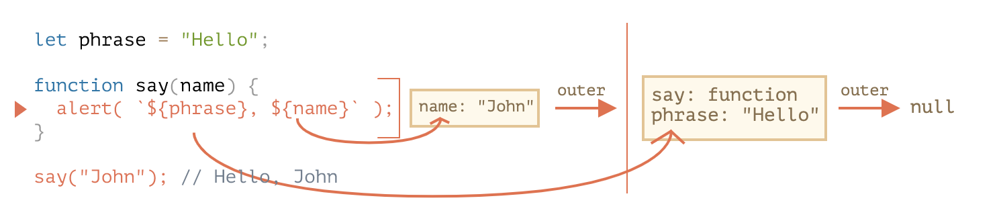

重学JavaScript - 执行上下文、闭包、作用域
变量
var
- var 没有块级作用域
- 允许重复声明
- 存在变量提升（声明会被提升，赋值不会），即在声明之前可以被使用
let
与 var 相反，具有块级作用域，存在暂时性死区
const
与 let 类型，区别就是声明后就不可修改，且声明的时候必须赋值
词法环境 - 执行上下文/作用域
我们想要真正理解作用域以及执行上下文，必须要先了解下词法环境。
在 JS 中，函数，代码块，以及整个脚本运行的时候，都有一个被称为词法环境（Lexical Environment 的隐藏对象
词法环境包含两部分
- 环境记录（Environment Record） —— 一个存储所有局部变量作为其属性（包括一些其他信息，例如
this的值）的对象。 - 对 外部词法环境 的引用，与外部代码相关联。
变量
变量其实就是词法环境中的一个属性，当整个函数/代码块/脚本运行结束，就会被回收
变量声明过程：
- 在代码运行时，词法环境就填充了所有的变量，但是变量是未初始化的状态，这就是为什么我们在 let 声明之前，使用变量会报
Cannot access 'xx' before initialization的错误而不是xx is not defined - 当执行到
let phrase，那么变量就被声明了只是值为undefined - phrase 被赋值为 Hello
- phrase 值被修改为 Bye
1 | let phrase = "Hello"; |
函数
不同之处在于函数声明的初始化会被立即完成。 这就是为什么我们在函数声明之前是可以调用函数的
内部与外部的词法环境 - 作用域链
函数被调用时，在调用开始时，会为创建一个新的词法环境存储局部变量和参数，所以在 say 被调用的时候我们有两个词法空间，一个 say 内部的词法空间，和一个全局的词法空间。执行下面语句时，phrase 会先在 say 函数内部搜索，没有找到，就在外部的词法环境中搜索，外部声明了let phrase = 'hello', 所以 phrase 的值为 hello
1 | alert(`${phrase}, ${name}`); |
当代码要访问一个变量时 —— 首先会搜索内部词法环境，然后搜索外部环境，然后搜索更外部的环境，以此类推，直到全局词法环境。
这也是所谓的作用域链，和原型链有点类似，会一层层的向上搜索
[[Environment]]
所有的函数在“诞生”时都会记住创建它们的词法环境。从技术上讲，这里没有什么魔法：所有函数都有名为 [[Environment]] 的隐藏属性，该属性保存了对创建该函数的词法环境的引用。
闭包
闭包是函数内部可以访问其所在的外部函数中声明的变量和参数， JS 中所有函数都是闭包，因为 JS 中函数声明时就自动把当前的词法环境存在了隐藏的属性[[Enviroment]]中，这样我们就能在函数内部拿到外部的变量了。
参考资料：
变量作用域，闭包：https://zh.javascript.info/closure